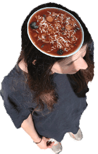
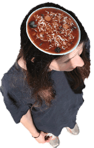

Upcoming activities:
23th of April: Critical AI Roundtable @ Lauseria Berlin
4th-6th of July: Chaos Feminist Convention Hamburg
7th-12th of July: Workshop for "WE ARE" with Goldextra Salzburg
3th-7th of September: Exhibiting "Nonhuman Ressources" together with Natalya Bashnyak @ ARS Electronica
Past activities:
Talks and Workshops
2025 - Working with Art and AI
Artist Talk for Cookies & Screens @ Kunsthochschule Weissensee
2024 - Hydrofeminist Economies
Artist Talk for MA Social Design @ Design Academy
Eindhoven
2024 - Worldbuilding with AI
Workshop for BA Business Innovation @ Hogeschool
Inholland Amsterdam
2024 - Working Independently with New Media
Panel for Transitions Festival @ Lumière
Cinema Maastricht
2024 - KI Stadtführung
City Tour with Hubertus Böhm for Open AI Lab @ Lause Culture Berlin
2024 - AverageCORE
Workshop with Sophia Marie Lee for Do LLMs dream of archived
sheep? @ mur.at Graz
2024 - Menschenbilder und KI & KI und Kunst
Panels for KI zwischen Innovation und
Verantwortung @ St. Virgil Salzburg
2024 - KI und Typographie
Workshop for BA Visuelle Kommunikation @ HBK Braunschweig
2024 - Weaving the Global Unconscious
Workshop, @ Jan van Eyck Maastricht
223 - The future of Art
Panelist, @ Dutch Innovation Days
2022 - Sex, Identity, Chicken and Shrimp
Artist Talk, @ ArtBlab London
Exhibitions
2024 - Psychoanalysis & AI Open Day
@ APARÄMILLON, Athens.
2023 - So, tell me, GPT…
@ Summer Sessions Test Lab, V2_ Rotterdam
2023 - Fan Fiction Wishing Well
@ Dutch Innovation Days, Enschede
@ Transitions Festival, Maastricht
2022 - Horst
@ FemGarage, Highbrow Institute Wien
@ Gogbot Festival, Enschede
@ Zapzarapp, Flutgraben e.V. Berlin
@ Tec Art Rotterdam, WORM Rotterdam
@ Museum of the Future, WARP Technopolis Enschede
2021 - Horst
@ Graduation Show 2021, Beursgebouw Eindhoven
2021 - Pigeon Poop
@ Searching for Utopia, Re:Kultura Kraków
2019 - Shit Coin
@ Biodesign Now and Beyond, Tour&Taxis Brussels
Films
2023 - Shrimp Love
@ Beijing International Film Festival
@ Helsinki International Film Festival
@ Chicago Underground Film Fest
@ Kurzfilm Festival Hamburg
@ Reimagining the Experimental Toronto
@ Video Art Festival Turku
2022 - Mantis trailer
@ Highbrow Institute Wien
2022 - Horst fucks myChick
@ Video Club, Fortuna Wetten Berlin
Publications
2024 - Ist es Spiel oder Arbeit?
Essay, @ Wissenschaftszentrum Berlin
2023 - Mantis Dance
Visual Essay, @ Womanly Magazine
2022 - Fertile Waters
Interview, @ Ecoes Magazine #4
2021 - Frigide Krustentiere
Essay, @ HOX Magazine #2
Residencies
2024 Research Residency @ APARÄMILLON Athens
2023 Summer Sessions @ V2_ Lab for the Unstable Media
2021 24_X_youngartists @ Re:Kultura Kraków
Grants and Awards
2023
Starting Digital Culture Grant, Stimulerings Fond
Starting Internationalization Grant, Stimulerings Fond
Nominee, Bio Art and Design Award
Winner, Video Power Editing Pitch
2022
Starting Design Grant, Stimulerings Fond
Nominee, Young Blood Award
Underexposed Mentee, Sonic Acts Amsterdam
Startende Makers Fond, Pictoright Steunfonds
Education
2024- MA Design and Computation, Universität der Künste & Technische Universität Berlin
2017-2021 BA Food nonFood, Design Academy Eindhoven
2016-2017 Philosophy, University College Maastricht
2015-2016 Knowmads Business School Amsterdam
Until 2014 Lycée français de Berlin


 in the shape of a giant chicken illustrates both his misogynous worldview and his fondness for meat.
in the shape of a giant chicken illustrates both his misogynous worldview and his fondness for meat. of five blockbuster films convey the narcissistic personality of the tough hero.
of five blockbuster films convey the narcissistic personality of the tough hero. alludes to his insecurity about his body and the six-pack he lacks.
alludes to his insecurity about his body and the six-pack he lacks. UltimateDOOM, one can shoot the enemeies in form of the chicken.
UltimateDOOM, one can shoot the enemeies in form of the chicken. , ArtBlab London (2022)
, ArtBlab London (2022) , TEMA Magazine (2022)
, TEMA Magazine (2022) , VideoClub Berlin (2022)
, VideoClub Berlin (2022) , Beursgebouw Eindhoven (2021)
, Beursgebouw Eindhoven (2021) , Enschede (2022)
, Enschede (2022) , Worm Rotterdam (2022)
, Worm Rotterdam (2022) , Enschede (2022)
, Enschede (2022) , Flutgraben Berlin (2022)
, Flutgraben Berlin (2022) , Highbrow Institute Wien (2022)
, Highbrow Institute Wien (2022)
 the krakowian pigeons on the topic of
the krakowian pigeons on the topic of  , the residency's main theme. It was very
, the residency's main theme. It was very  .
. pigeons
pigeons  so that they would poop in rainbowflag's colours over conservative monuments of Krakóws city center. Unfortunately, they were
so that they would poop in rainbowflag's colours over conservative monuments of Krakóws city center. Unfortunately, they were  of my food and I didn't have enough time to gain their
of my food and I didn't have enough time to gain their  .
.
 explaining my idea, and passed on the coloured food to locals so they could carry out my mission after I left the city. Maybe they would have more success than me.
explaining my idea, and passed on the coloured food to locals so they could carry out my mission after I left the city. Maybe they would have more success than me.


 ,
we investigated economic diagrams, and created a manifesto for a hydrofeminist diagrammatic practice.
,
we investigated economic diagrams, and created a manifesto for a hydrofeminist diagrammatic practice.


 A collaboration with
A collaboration with 


 
